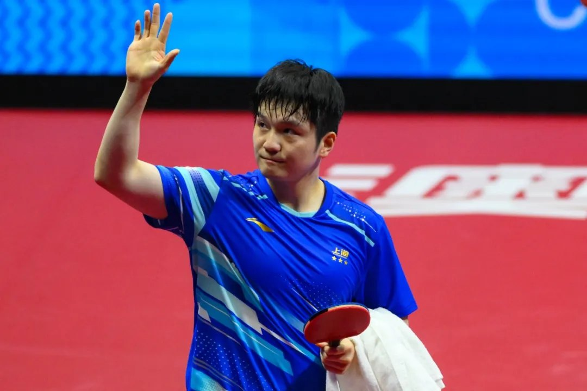
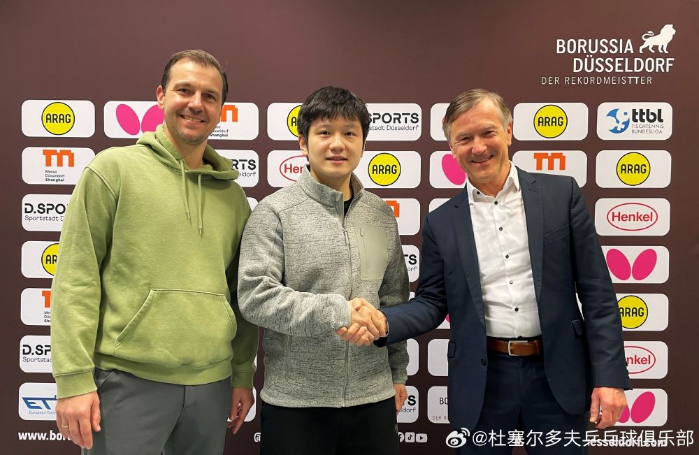

Overseas · 04
留洋德甲
2025 年 6 月，他成为中国男乒现役主力中第一个加盟欧洲职业联赛的人。这不是一次镀金，而是一次真正的职业转身。
Chapter One · Saarbrücken
萨尔布吕肯的一年
2025 年 6 月 1 日，德甲萨尔布吕肯俱乐部宣布樊振东加盟。俱乐部在回顾赛季时用了这样的说法：引进这个级别的球员，让俱乐部在世界乒乓球领域扮演了真正的先锋角色。
他把自己当成一名普通职业球员融入球队：客场比赛、联赛轮次、双打配合，一样都不少。德甲赛场出战 19 场取得 17 胜，两次当选月度最佳球员。
2026 年 1 月 4 日，德国杯决赛在新乌尔姆进行，他率队 3:1 战胜富尔达-马伯策尔队夺冠并当选 MVP——这是他的第一个海外冠军。

19德甲出战场次
17联赛胜场
2月度最佳球员
3当季冠军（德国杯/欧冠/德甲）
Chapter Two · Treble
一个月内拿齐三项冠军
- 2026-01-04德国杯决赛 率队 3:1 战胜富尔达-马伯策尔，夺冠并当选 MVP新乌尔姆
- 2026-05-17欧洲冠军联赛冠军，随萨尔布吕肯捧起欧冠奖杯欧冠四强赛
- 2026-05-31德甲联赛冠军，完成德国杯、欧冠、德甲三冠王赛季收官
- 2026-06-10当选 2025/26 赛季德甲最佳球员，得票率 94%，票差为联赛历史最大赛季评选
Chapter Three · Düsseldorf
下一站：杜塞尔多夫
2026 年 3 月 16 日，萨尔布吕肯宣布樊振东将在赛季结束后离队；同日，杜塞尔多夫俱乐部宣布与他签下 2026/2027 赛季一年期合同，7 月 1 日正式转会。
他在告别时说，这段经历是职业生涯里非常特别的一段，但对于球员而言，已经到了迈出新一步的时候。他也提到与德国名将蒂姆·波尔的友谊，是促使自己迎接新挑战的原因之一。
新赛季德甲首秀，他独得两分帮助杜塞尔多夫主场取胜，随后球队取得六连胜。两家俱乐部的宣传海报上，他都站在 C 位。

为什么这件事值得单独一章
中国乒乓球的训练体系与欧洲职业联赛的运作方式差异很大：一边是国家队集训与集体目标，一边是俱乐部的赛程、合同与商业安排。樊振东的留洋，是两种体系之间一次具体的接轨尝试，也因此被福布斯中国 2026 年榜单归入“精神的超越者”这一新设类别。